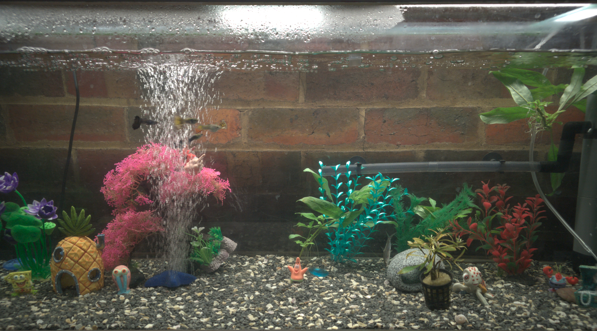
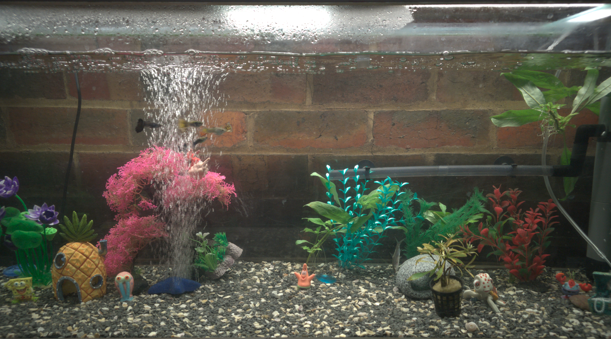

-->

-->

Michael Luckman's Aquarium
Michael Luckman has 2 Aquarium's, a 1.2m 200l and 45cm 50l.
The 200l Aquarium has Guppies, a Beta Fish and a silver shark.
The Silver Shark is in the tank to help keep it clean. The Guppies names are Blueberry, Dmitri, Lime, McDreamy, Rainbow and Zuko.
The Beta fish is called Saphire.
The Silver Shark is called Lenny
The 50l Aquarium has female Guppies, some of which are pregnant and a Bristlenose Catfish.
The Guppies names are Baby, Flash, Grey and Panda.
The Bristlenose Catfish is called Pineapple.
Source: Michael Luckman